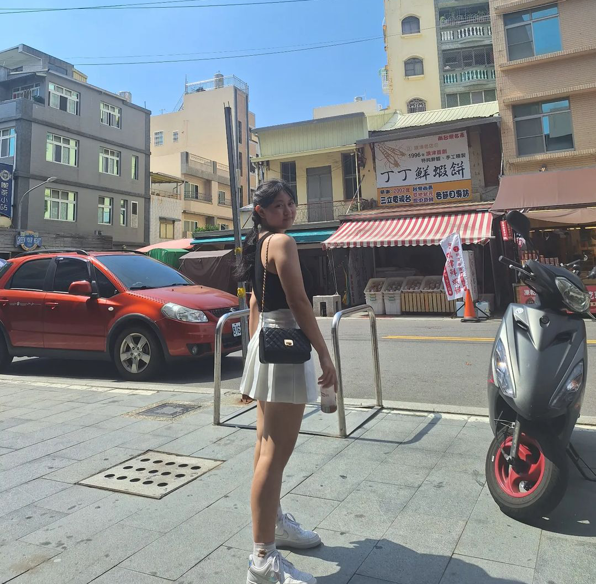

Selamat Mendarat di tahun 2023
Sekilas memang nggak ada perbedaan, nggak ada yang benar-benar berubah. Ya ... dari dulu sampai sekarang, lu tetap Jovintya dan
w tetap Evelyn, kita nggak berganti orang. Tapi, semakin dilihat, ternyata ada banyak sekali yang berubah. Pemikiran kita, tantangan
kita. Ternyata, semua itu benar-benar berubah dari tahun-tahun sebelumnya.
Wajah dan tingkah laku kita yang masih sangat polos waktu itu, seakan ngak ada masalah serius yang perlu dihadapi. Mukanya
masih muka anak-anak, ya, sekarang juga nggak bisa dibilang dewasa. Dulu kita asik main, seolah nggak masalah untuk bodoamat.
Sekarang kita harus selalu membuat keputusan sendiri. Sudah punya ruang dan tujuan untuk berjalan sendiri, arah yang berbeda juga.
Di penutup ini, selamat ulang tahun kembali kuucapkan. Apa yang lu cita-cita-kan atau kejar sekarang, semoga selalu lancar dan
sesuai harapan ya. Semoga kita bisa berkumpul lagi. Huhu, ngetiknya sambil mewek. Kita tonton BTS-nya aja yuk!